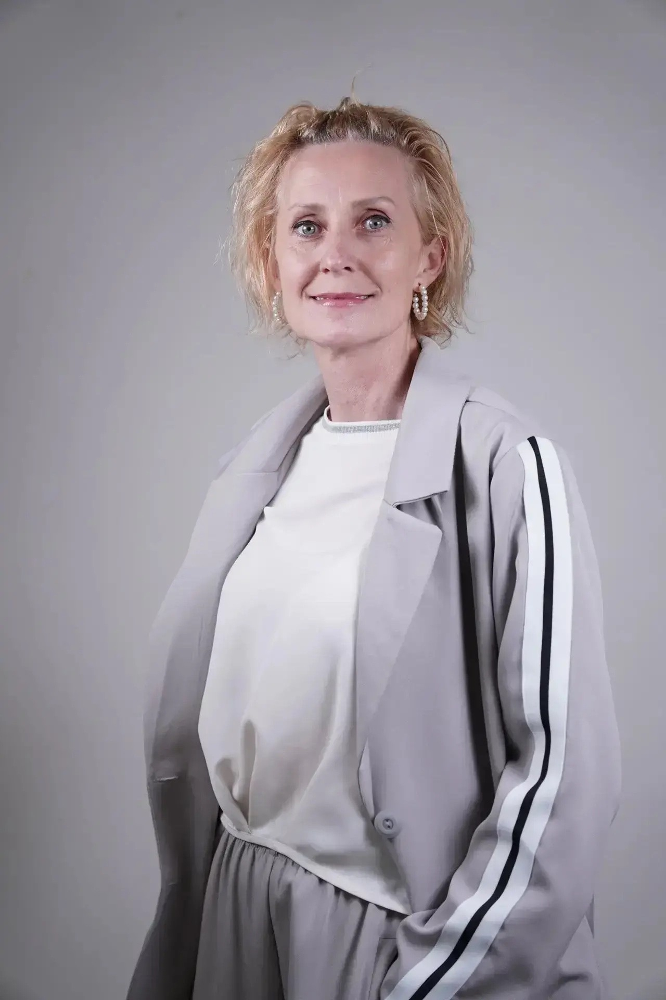
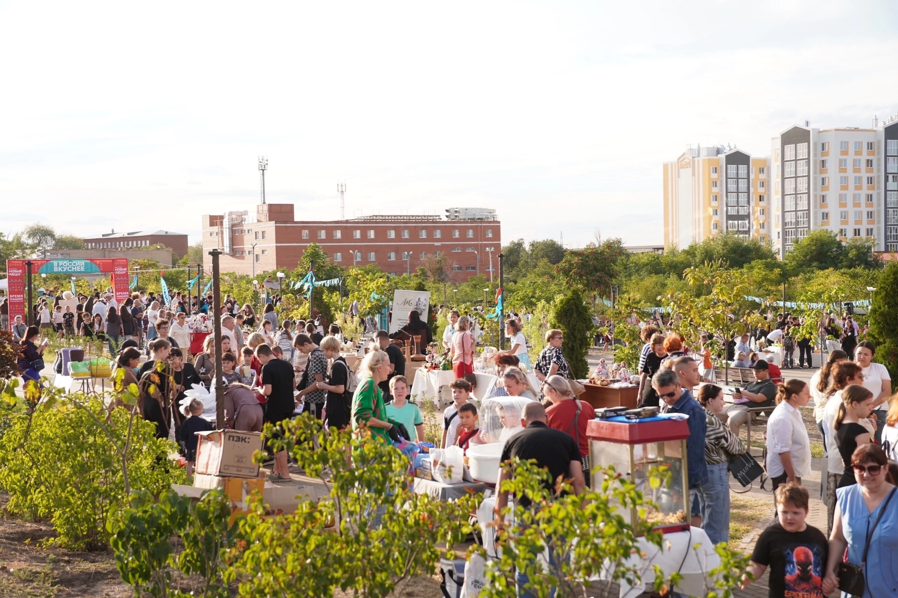
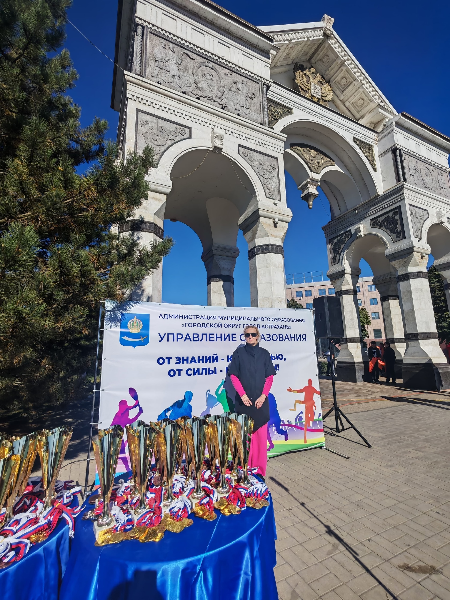
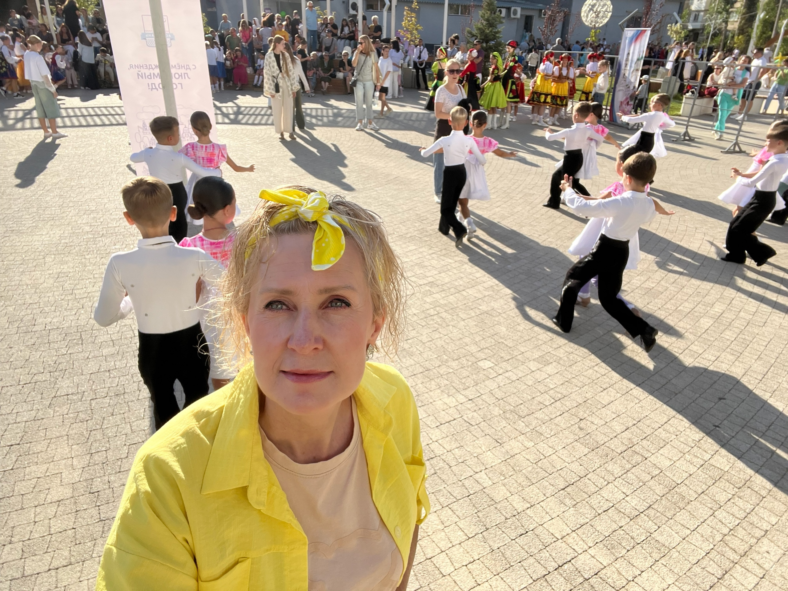

Более 10 лет в системе ФССП России
судебный пристав-исполнитель • юрист 1 класса • капитан юстиции
правоприменительная практика • нормативно-правовые документы • контроль исполнения
Екатерина Аркадьевна Смирнова
Право • образование • культура • организация • цифровые инструменты и сервисы
судебный пристав-исполнитель • юрист 1 класса • капитан юстиции
правоприменительная практика • нормативно-правовые документы • контроль исполнения
дополнительное образование • высшая квалификационная категория
квалификация «Руководитель образовательной организации»
профессиональный конкурс «Сердце отдаю детям»

2004–2015
УФССП России по Астраханской области
судебный пристав-исполнитель • юрист 1 класса • капитан юстицииС 2017 года
Эколого-биологический центр, Астрахань
педагог дополнительного образованиявысшая квалификационная категория
2007
юрист, специальность «Юриспруденция»
2024
магистратура по направлению «Специальное дефектологическое образование», диплом с отличием
2026
«Руководство и управление образовательной организацией», 1000 часов
квалификация «Руководитель образовательной организации»Результаты и проекты

2026 · аудитория 450+ человек
Участие в организации и координации концертной программы, подготовка сценария, привлечение артистов и мастер-классов, координация приглашённых участников на площадке.

78 команд

в преддверии Дня города